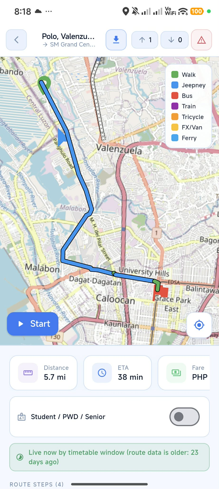

Download TransitPH
Download the current Android APK and start exploring better local routes.
Prefer your phone? Scan to download the APK.
Built for CAMANAVA commuters
TransitPH is a community-driven mobile application that helps commuters find routes, terminals, and fare estimates across Caloocan, Malabon, Navotas, and Valenzuela.

Practical tools for planning and understanding everyday trips around CAMANAVA.
Get transit updates shared by fellow commuters in the community.
Plan trips with route options, estimated travel times, and fare information.
Earn badges and achievements while traveling.
Help improve local transit information for the whole community.
Check fare estimates for trips across the CAMANAVA area.
Explore maps to find routes, terminals, and useful points of interest.
Download the current Android APK and start exploring better local routes.
Prefer your phone? Scan to download the APK.
TransitPH is a student-developed mobile application designed to help commuters access and understand public transportation information in Caloocan, Malabon, Navotas, and Valenzuela (CAMANAVA).
TransitPH was developed as a thesis project based on common commuting challenges such as finding routes, identifying unfamiliar terminals, and estimating transportation fares. The project explores how community-contributed information can support commuters in navigating local public transportation.
TransitPH incorporates commuter contributions to help collect and improve transportation information. The project aims to provide information that is relevant to the local commuting experience while recognizing that routes, fares, and transportation conditions may change.